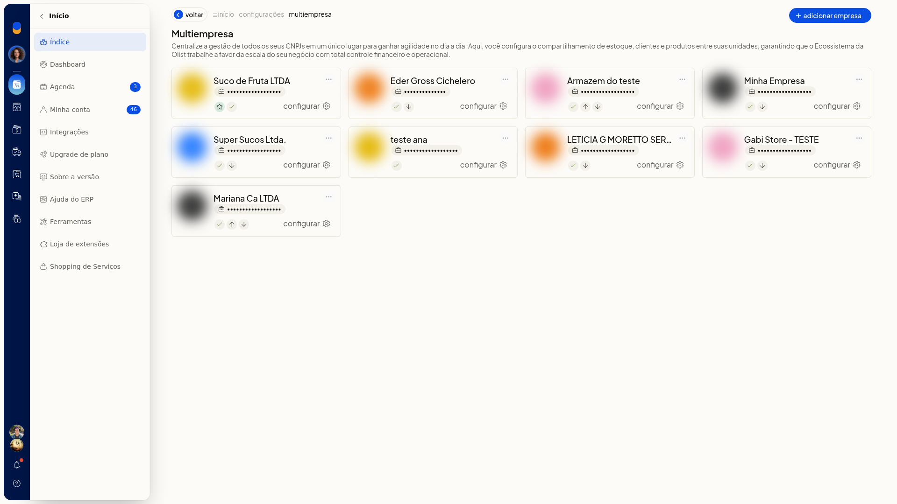
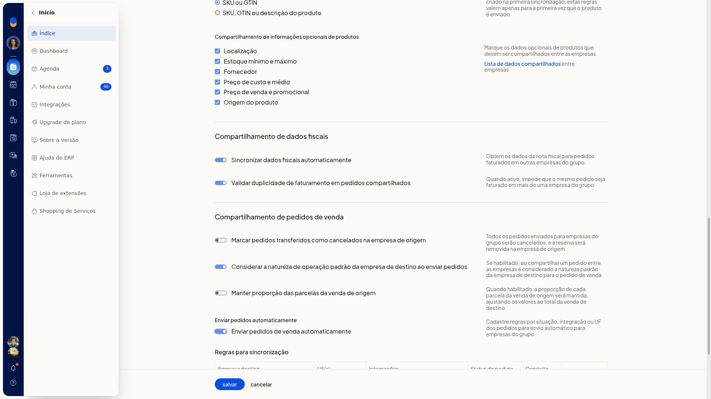
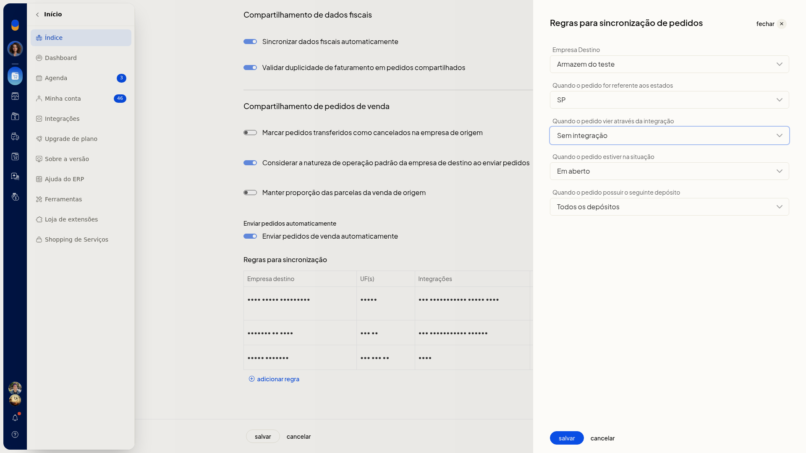

Criar regras de envio automático de pedidos no Multiempresa
No ERP da Olist, o envio automático de pedidos define para qual empresa do grupo um pedido de venda segue, conforme destino, estado, integração, situação e depósito. Você cria essas regras no card da empresa, em configurar.
Pré-requisitos
- A empresa destino já precisa estar vinculada e marcada para receber dados.
- Se Multiempresa não aparecer para você, peça acesso ao administrador da conta.
Importante
- Com Enviar pedidos de venda automaticamente ligado, só é possível salvar se houver ao menos uma regra de sincronização.
- O local logístico externo só pode ser informado em regra com uma única integração Shopify.
Instruções
Você também pode abrir a lista pelo avatar da empresa, em Minha conta > Gerenciar Multiempresa.

-
Acesse Configurações > Configurações ERP.
-
Com Geral ativo, em Outras configurações, clique em Multiempresa.

-
Na lista, clique em configurar no card da empresa.

-
Ative Enviar pedidos de venda automaticamente.

-
Na seção Regras para sincronização, clique em Adicionar regra.

-
Preencha a regra. Nenhum destes campos é obrigatório.
-
Empresa Destino: selecione uma empresa já marcada para receber dados.
-
Quando o pedido for referente aos estados: escolha as UFs, de AC a TO, ou Selecionar todas.
-
Quando o pedido vier através da integração: escolha Sem integração ou um canal já conectado à empresa.
-
Quando o pedido estiver na situação: escolha Selecione, Em aberto, Faturado, Cancelado, Aprovado, Preparando envio, Enviado, Entregue, Pronto para envio, Dados incompletos, Não entregue ou Em devolução.
-
Quando o pedido possuir o seguinte depósito: escolha Todos os depósitos ou um depósito já cadastrado.

- Clique em salvar para gravar a regra. cancelar fecha o painel sem gravar.
Informações adicionais
Na lista de regras, use editar, Clonar regra ou Remover regra.